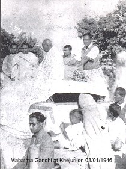

Freedom Movements at Contai
The people of Contai Sub-Division have fought continually for survival against invaders and nature. This resilience was evident in their massive participation in India's freedom struggle.
Malangi Revolt (1793-1804)
The East India Company monopolized salt production in 1781. The workers, known as Malangis, were exploited brutally. In 1804, Paramananda Sarkar united the Malangis and besieged the salt agency at Contai. The movement ended only when demands were conceded.
Swadeshi & Boycott Movement (1905)
Following the partition of Bengal, the boycott resolution was adopted. Birendranath Sasmal proposed donating one day's earning to start Handloom industries. Volunteers like Gagan Chandra Rana visited houses urging women to break foreign glass bangles.
Non-Cooperation Movement (1920-1922)
Many lawyers (including Birendranath Sasmal) and teachers (like Nikunja Behari Maity) resigned from their posts. National Schools were established at Kalagachia and Contai to provide alternative education to students who left government schools.
Civil Disobedience & Salt Satyagraha (1930)

Contai was selected as "Bengal's Dandi". On April 6, 1930, volunteers marched to Pitchhaboni to manufacture salt. Despite police brutality, the movement spread to Khejuri, Ramnagar, and Egra. This became a historic chapter in Contai's history.
Quit India Movement (1942) - The August Revolution
Responding to Gandhi's "Do or Die" call, Contai rose in revolt. Volunteers established parallel administrations. Police stations in Khejuri, Patashpur, and Bhagawanpur were captured or destroyed by the people. The region virtually became independent for a short period, facing immense police atrocities and firing.
Notable Incidents: The police firing at Mahishagote (Sept 22, 1942) and Belboni (Sept 27, 1942) resulted in numerous martyrs, but the spirit of the people remained unbroken.